Cerrar sesión
Bienvenido a
CEUS
HelloWorld
Cryptocurrency Exchange Unified System
o en español
Servicio Unificado de Intercambio de Criptomonedas
Proyecto para AIIS, realizado por:
Gonzalo García Granés
Jose Manuel López Carnicer
Manuel Cecilio Pérez Gutiérrez
Google autenticación
Valor actual del bitcoin
Mapa completo
Login con Google
valor actual